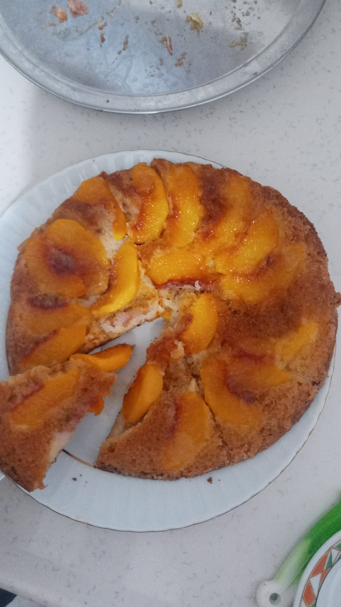

Kaç kişilik : 6 Hazırlama süresi : 10dk Pişme süresi : 30dk

Şeftalili Kek Tarifi İçin Malzemeler
- Şeftali
- 4 yemek kaşığı toz şeker
- 2 çorba kaşığı tereyağ
- 1 çay bardağı sıvıyağ
- 1 çay bardağı süt
- 1 yumurta
- 1 paket şekerli vanilin/1 paket kabartma tozu
Şeftalili Kek Nasıl Yapılır?
- Tavanıza tereyağını iyice sürün
- 2 yk toz şekeri tavanın içine iyice yayın
- Dilim dilim doğradığınız şeftalileri tavanıza yerleştirin
- Ayrı bir kaba yumurtayı kırın ve toz şekerle berbaber çırpın
- Sırayla süt zeytinyağı vanilin ve kabartma tozunu karışıma ekleyin ve iyice çırpın.
- En son unu ekleyip iyice çırpın
- Karışımı tavaya dökün ve kapağını kapatarak kısık ateşte çevirerek pişirin